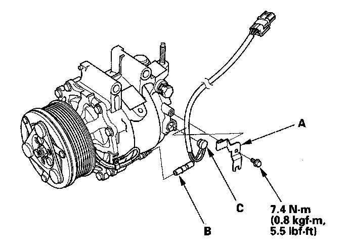
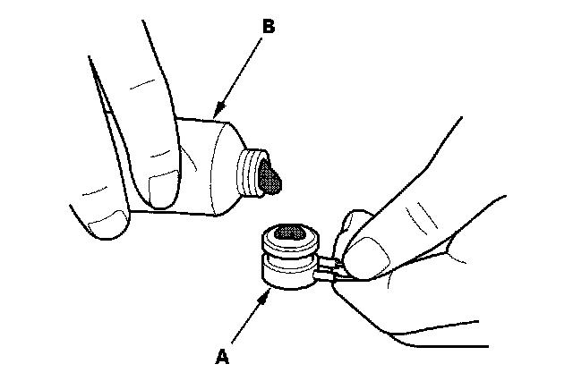

Thermal Limiting Fuse: Service and Repair
A/C Compressor Thermal Protector Replacement
1. Remove the bolt and the holder (A). Disconnect the field coil connector (B), then remove the thermal protector (C).

2. Replace the thermal protector (A) with a new one, and apply silicone sealant (B) to the bottom of the thermal protector.
3. Install the thermal protector in the reverse order of removal.